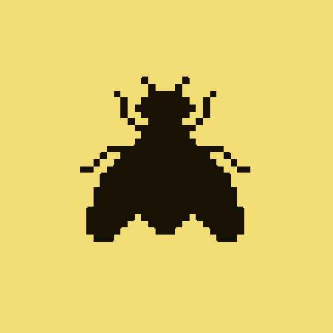
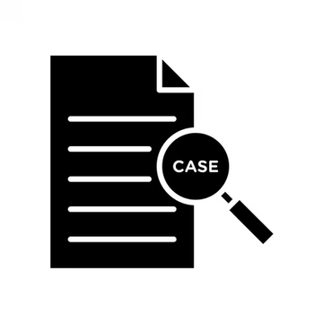
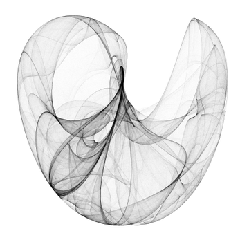

Akhil Ratan Misra
Akhil Ratan Misra
< Projects >
Things I have built and am building.

Computational neuroscience
Fly Connectome Navigation Lab
Read moreClose
A fruit fly learns to find a hidden cupcake using a spiking brain wired with 631,412 real FlyWire synapses.
Watch it smell, learn from dopamine and steer, with every neuron flashing at its real position in the brain.
Open the lab

Case study
What if Migros buys Coop?
Read moreClose
An antitrust risk assessment of a hypothetical Swiss grocery merger, built on real Swiss geography and public data.
A spatial demand model, a simulated digital twin and causal machine learning show which local markets raise concerns, and which remedies could get the deal cleared.

Generative art
Art in Processing
Read moreClose
Generative art written in the Processing language: blobs, fractals, de Jong attractors, planets and circles shaped by noise.
Each piece grows from a few lines of code and a little randomness.
View on GitHub